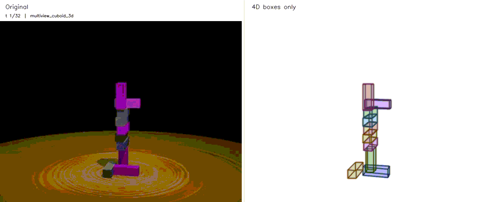
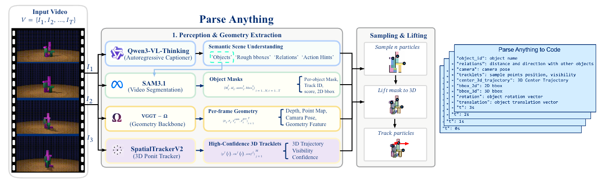
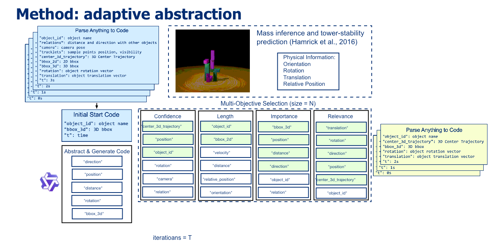

Recorded comparison
| Condition | R² (%) | Signed r | nRMSE |
|---|
From parsed scenes to evidence for physical reasoning.

Accurate geometry does not automatically produce accurate physical judgments. We study how parsed objects, motion and relations become evidence a vision-language model can actually use.
Identify objects; estimate masks, geometry and trajectories.
Bind identities, coordinates, time and question-relevant relations.
Calculate supported events, paths or geometry under explicit assumptions.
Separate observations, modeled outcomes and unknown states.
Answer from the original video, question and supplied evidence.
Figure 1. The current research direction. The completed development methods below use different operations; a single transferable pipeline is not yet validated.


Eight completed development panels. Each has its own frozen inputs, controls and method. These are not scores from one unified benchmark run.
Loading audited experiment records...
| Condition | R² (%) | Signed r | nRMSE |
|---|
Table 1
| Study | Questions | Method | R² (%) | Outcome |
|---|
Separate, previously exposed development panels; no cross-panel aggregate. A high R² alone does not establish calibrated judgments, positive correlation, or improvement over every control.
One frozen protocol. All 13 studies. The earlier task-conditioned graph is evaluated separately from the development methods above.
Table 2
| Study | Questions | Video | Direct code | Full code | Task graph | Partial reference |
|---|
R² (%) averages primary experiments within each study. Stephan includes 28 primary + 2 diagnostic questions; Beller 2025 has one diagnostic question only. Undefined values remain missing, never zero. Partial reference is incomplete GT-derived evidence, not an Oracle upper bound.
Table 3
| Condition | R² (%) | Signed r | nRMSE |
|---|
This is the common defined subset, not the full 490-question score. The graph's signed correlation is below both code controls. The apparent R² advantage is not stable across scoring protocols.
We report squared Pearson correlation with human item means. Within each experiment, response-type R² values are equally averaged, followed by equal experiment averaging. This follows the paper-style aggregation with disclosed local edge rules, not a full replication of the official ten-run protocol.
The local rule requires at least three scalar points per type, nonzero variance and complete predictions. Undefined types propagate. The released CogGym evaluator instead uses normalized pooled correlation; its denominator and estimator differ. Negative correlation can still produce high R², so signed r and nRMSE accompany aggregate and development results.
The full cohort retains 24 experiments: 22 primary (487 questions), plus two diagnostic experiments (3 questions). Direct code was generated by Qwen3-VL-8B-Instruct; the final reasoner is Qwen3.5-27B, FP16, non-thinking, greedy.
The original geometry benchmark measures reconstruction quality. Reasoning also requires temporal accuracy, valid physical assumptions and correct use of the evidence.
| Parser | mIoU (%) | Center RPE@1 (%) |
|---|
Mean ± population SD across samples (ddof = 0), not seed uncertainty. Center RPE is displacement residual normalized by the source-frame diagonal. Parse Anything mIoU uses the accepted-box merge; temporal RPE uses a separate 8B-Thinking condition. These do not validate the dynamics of every reasoning question.
Table 5
| Stage / experiment | Workload | Hardware | Throughput | Timing scope |
|---|---|---|---|---|
| Parse AnythingArchived parsing run | 280 samples 4,439 sampled frames | 4 independent 1× A5000 workers | 0.3250 sampled images/s/GPU | 13,657.11 summed worker seconds; includes loading and pipeline |
| Explicit event semanticsBass development | 84 new VQA calls | 4× A5000 | 0.00579 requests/s/GPU* | 3,628 s allocation; includes model startup |
| Agentic refinementHamrick pilot | 10 videos | 1× A5000 | 0.00252 videos/s/GPU | 396.8 s/video, including post-freeze evaluation |
*Allocation-normalized multi-GPU throughput, not a measured single-card inference rate. Images, VQA requests and videos are different work units. Parsing timing uses an 8B-Instruct identifier, not a jointly measured configuration with the accuracy figures above.
A target-blind Qwen3-VL-8B-Thinking refinement loop improved Hamrick 3D-box mIoU from 59.86 ± 12.48% to 61.87 ± 7.01%. Refinement took 65 min 56 s; post-freeze evaluation took 12 s. This 10-video parsing pilot is separate from the current reasoning experiments.
Original video, question, supplied code and recorded prediction. These archived 8B/9B examples are separate from the newer 27B development experiments.
Saved examples could not be loaded.
Colors restored from the study prompt. The saved model question contained plain-text color placeholders.
Not part of the model input. Aggregate human judgments are not a single correct answer.
High box overlap does not validate identity continuity, contact timing, velocity or latent physical properties. Partial reference graphs are not complete physical Oracles.
Bass improves when event occurrence is separated from finite-horizon absence. The same physical facts can be misunderstood when their semantics are compressed.
Numerical timelines help selected conditional tasks; other studies still expose scale-polarity errors, unsupported assumptions and weak calibration.
Research snapshot / 5 November 2026
Bass (42 questions) and Gerstenberg 2021 (8 questions) are prepared for a unified 50-question comparison. At this snapshot, GPU inference is queued: 0 / 74 new requests completed. No unified-method score is reported.